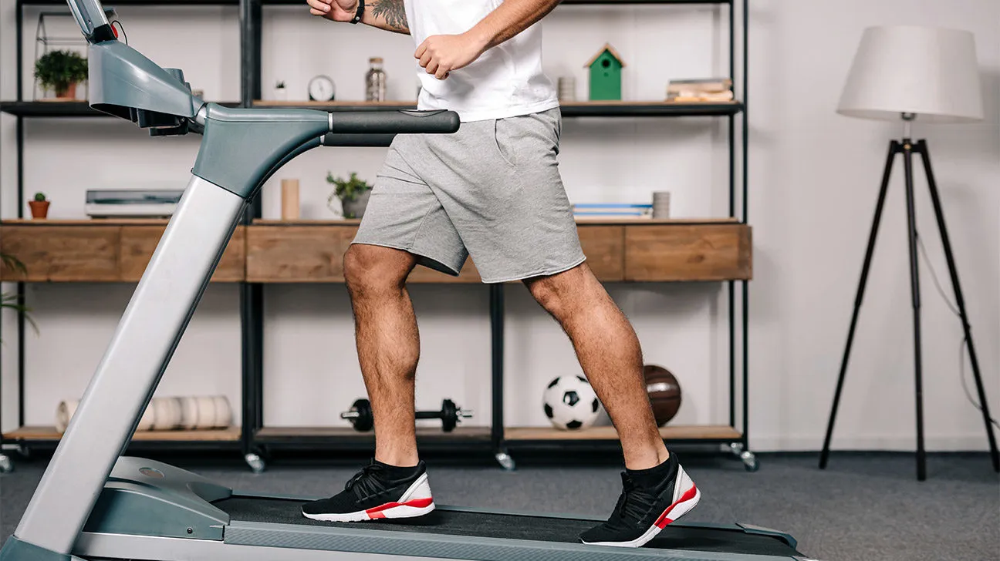
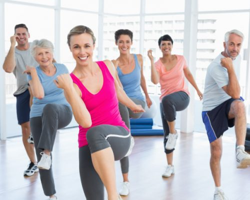
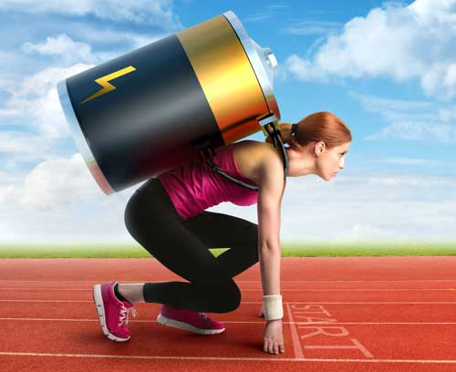
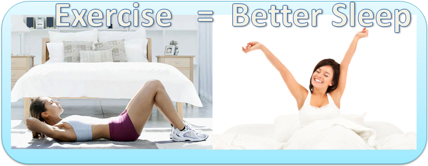
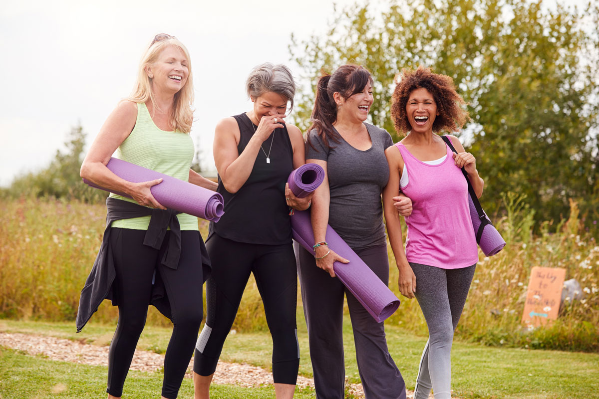

- Exercise controls weight
- Exercise combats health conditions and diseases
- Stroke
- Metabolic syndrome
- High blood pressure
- Type 2 diabetes
- Depression
- Anxiety
- Many types of cancer
- Arthritis
- Falls
- Exercise improves mood
- Exercise boosts energy
- Exercise promotes better sleep
- Exercise puts the spark back into your sex life
- Exercise can be fun … and social!
Exercise can help prevent excess weight gain or help maintain weight loss. When you engage in physical activity, you burn calories. The more intense the activity, the more calories you burn. Regular trips to the gym are great, but don't worry if you can't find a large chunk of time to exercise every day. Any amount of activity is better than none at all. To reap the benefits of exercise, just get more active throughout your day — take the stairs instead of the elevator or rev up your household chores. Consistency is key.
Worried about heart disease? Hoping to prevent high blood pressure? No matter what your current weight is, being active boosts high-density lipoprotein (HDL) cholesterol, the "good" cholesterol, and it decreases unhealthy triglycerides. This one-two punch keeps your blood flowing smoothly, which decreases your risk of cardiovascular diseases. Regular exercise helps prevent or manage many health problems and concerns, including:
Need an emotional lift? Or need to destress after a stressful day? A gym session or brisk walk can help. Physical activity stimulates various brain chemicals that may leave you feeling happier, more relaxed and less anxious. You may also feel better about your appearance and yourself when you exercise regularly, which can boost your confidence and improve your self-esteem.
Winded by grocery shopping or household chores? Regular physical activity can improve your muscle strength and boost your endurance. Exercise delivers oxygen and nutrients to your tissues and helps your cardiovascular system work more efficiently. And when your heart and lung health improve, you have more energy to tackle daily chores.
Struggling to snooze? Regular physical activity can help you fall asleep faster, get better sleep and deepen your sleep. Just don't exercise too close to bedtime, or you may be too energized to go to sleep.
Do you feel too tired or too out of shape to enjoy physical intimacy? Regular physical activity can improve energy levels and increase your confidence about your physical appearance , which may boost your sex life. But there's even more to it than that. Regular physical activity may enhance arousal for women. And men who exercise regularly are less likely to have problems with erectile dysfunction than are men who don't exercise.
Exercise and physical activity can be enjoyable. They give you a chance to unwind, enjoy the outdoors or simply engage in activities that make you happy. Physical activity can also help you connect with family or friends in a fun social setting. So take a dance class, hit the hiking trails or join a soccer team. Find a physical activity you enjoy, and just do it. Bored? Try something new, or do something with friends or family.
